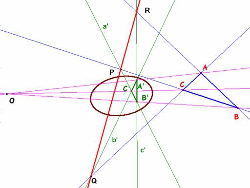

De
investigación
Propuesto
por José María Pedret. Ingeniero naval. (Esplugas de Llobregat, Barcelona)
Un
problema muy atractivo es el recíproco del 315 y que desde aquí lo propongo a
RICARDO BARROSO por si tiene a bien el publicarlo
Problema 320 .- "Dados dos triángulos perspectivos ABC y
A'B'C', construir (si existe) la cónica respecto a la
que son perspectivos." Pedret, J.M. (2006) Comunicación
personal.
Solución de Saturnino Campo Ruiz, profesor del IES Fray Luis de León, de Salamanca
Según vimos en el problema 315, si dos
triángulos son polares respecto de una cónica, son perspectivos, resolveremos
el problema actual, encontrando una cónica para la cual los pares de puntos (B,C’); (B’,C); (A,B’); (A’,B); (A,C’) y (A’,C) son conjugados
respecto de ella. Analicemos lo que significan estas condiciones.
Si tenemos la cónica como una matriz M simétrica de orden 3, la condición de
conjugación del primer par se expresa por M(B,C’)=0, una ecuación lineal homogénea de los coeficientes de la
matriz. Es equivalente a dar un punto de la cónica; en este caso la ecuación es
de la forma M(P,P)=0.
También
podemos verlo desde otro enfoque, la cónica queda perfectamente determinada
dando cuatro puntos y el par conjugado
utilizando el teorema del cuadrivértice de Desargues. La recta definida por el par de conjugados corta
a los pares de lados opuestos del cuadrivértice
formado por los cuatro puntos en pares recíprocos de una involución. Los puntos
dobles de la misma son puntos de la cónica, y así podríamos tener los
suficientes para poder determinarla por completo. (Si la cónica no tiene puntos
en la recta, o sea la involución es elíptica, hay recursos para hallar la polar
de un punto de la involución y proseguir hasta determinar la construcción de la
cónica, pero esto es desviarse demasiado del problema. Quién desee más detalles
puede consultar la excelente obra Geometría
Métrica, P. Puig Adam, que dedica su segundo
volumen a la Geometría Proyectiva).
Así pues podemos considerar que tenemos condiciones
suficientes para asegurar la existencia de una cónica en la que sean conjugados
los cinco primeros pares de puntos que hemos formado a
partir de los vértices de los dos triángulos.
Sólo resta ver que el sexto par, (A’,C), también es conjugado respecto de
esta cónica.
Usaremos
la propiedad (P1) del problema 315: si dos pares de vértices opuestos de un
cuadrilátero completo son conjugados con respecto a
cierta cónica, también lo es el otro par.

Tomando el cuadrilátero completo
formado por las rectas BB’, CC’, BC y B’C’,
en el que son opuestos los pares(B,C’); (B’,C) y (O,P). El par (O,P)
lo forman puntos conjugados.
Si ahora se toman BB’, AA’, BA y B’A’ resultan conjugados O y R (además de (A,B’) y (A’,B)). De estas dos deducimos que la
polar del punto O (vértice de la
homología) es la recta PQR (eje de la
misma).
Considerando, por último, el
cuadrilátero definido por AA’, CC’,
AC y A’C’ en el que son opuestos (O,Q); (A,C’) y (A’,C), la conjugación de los dos primeros implica la del último, y
con ello la sexta relación de conjugación que faltaba queda demostrada y
concluimos.